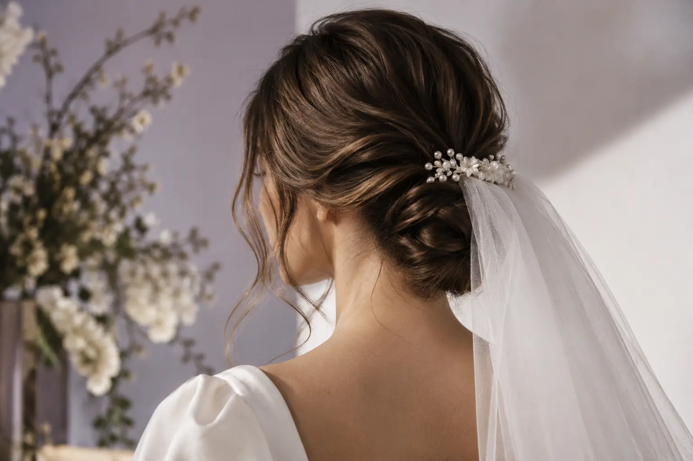

Vestuvinė šukuosena ir bandomasis vizitas: ką užbaigti prieš renginį?
Autorius: Madbeauty redakcija · Numatyta 2026 m. spalio 27 d. 16:00 (Lietuvos laiku)
Rezultatų kortelė padės užfiksuoti pasirinktą šukuoseną, sutartą paslaugos apimtį ir renginio dienos grafiką.

Bandomasis vizitas nėra savaime privaloma kiekvienos vestuvinės šukuosenos dalis. Ar jis siūlomas, kas į jį įeina ir kada vyksta, nustato konkretus teikėjas. Jei bandymą sutariate, jo tikslas – išbandyti pasirinktą variantą ir užrašyti, kas renginio dieną bus daroma, kas dar gali keistis ir kokio grafiko laikysitės. Tai padeda susitarti dėl darbo, bet negarantuoja visiškai vienodo rezultato kitą dieną.
Ką verta nuspręsti bandymo metu
Atsineškite pagrindinę įkvėpimo nuotrauką ir apibūdinkite, kurios jos detalės jums svarbios. Sutarkite, kurios bus pritaikytos jūsų plaukams, ilgiui ir norimai formai, o kurios gali skirtis. Nuotrauka padeda parodyti kryptį, tačiau pati savaime nenusako, kokius darbus apima paslauga.
Pavyzdžiui, jei renkatės susegtą šukuoseną, galima aptarti, kuri plaukų dalis bus susegta, kur liks palaidų sruogų ir kokį vaizdą norite matyti iš priekio bei nugaros. Tai tik vienas iliustracinis variantas: galutinis sprendimas priklauso nuo jūsų pasirinkimo ir sutarto darbo.
Bandomojo vizito rezultatų kortelė
Po bandymo užpildykite šias eilutes. Jei dar ko nors nenusprendėte, pažymėkite tai kaip atvirą klausimą, o ne palikite numanomą susitarimą.
- Pagrindinis variantas: kokia forma ir įvaizdžio detalės pasirinktos?
- Svarbiausios nuotraukos detalės: ką norite atkartoti, o ką pritaikyti?
- Kas dar gali keistis: kokios detalės lieka galutiniam sprendimui?
- Aksesuarai: kas juos parūpina, kada jie bus naudojami ir ar tai keičia darbo apimtį?
- Sutarta paslauga: kas atliekama per bandymą ir kas įtraukta į renginio dienos paslaugą? Atskirai pasižymėkite kainą ir sąlygas, jei teikėjas jas nurodė.
- Renginio diena: kas atliks šukuoseną, kur ji bus daroma ir kokį pradžios bei pabaigos laiką sutariate? Pasižymėkite ir atvykimo ar kelionės sąlygas, jei jos aktualios.
Suderinkite grafiką su paslaugos apimtimi
Planuokite atgal nuo laiko, kada turite išvykti ar būti pasiruošę ceremonijai. Su teikėju sutarkite realų šukuosenos pradžios ir pabaigos laiką, atvykimo vietą ir tai, ar tą pačią dieną bus atliekami kiti darbai. Nepalikite šių punktų spręsti iš meniu pavadinimo: „vestuvinė šukuosena“ nepasako, ar į paslaugą įeina bandymas, aksesuarai ar atvykimas.
Jei šukuosena derinama su makiažu ar kitomis pasiruošimo užduotimis, į bendrą planą įrašykite kiekvienos paslaugos laiką ir tai, kas jas atliks. Pasirinkite jums tinkamą laiko rezervą; jo dydį derinkite prie renginio vietos, kelionės ir teikėjų sutarto grafiko.
Kada susitarimas jau aiškus?
Prieš renginį turėtumėte galėti trumpai atsakyti: kokia šukuosena sutarta, kurios detalės dar gali keistis, kokie darbai ir sąlygos patvirtinti bei kada ir kur paslauga vyks. Jei trūksta kainos, bandymo ar atvykimo sąlygų, paprašykite jas patikslinti tiesiogiai iš teikėjo; Madbeauty katalogo kategorija šių individualių susitarimų nepatvirtina.
Jei norite peržiūrėti nacionalinę kategoriją, atverkite Vestuvinė šukuosena ir miestą pasirinkite atskirai. Kategorijos puslapis savaime negarantuoja, kad konkrečiame mieste yra teikėjų ar laisvų laikų.
Planuojamos vidinės nuorodos
Šaltiniai peržiūrai
- Looks · kirpimas ir dažymas — Actual provider own menu inspected: individual variants only, not national tariffs/confirmed Madbeauty supply.